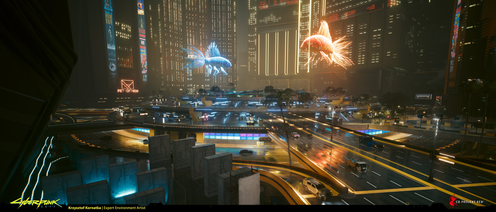
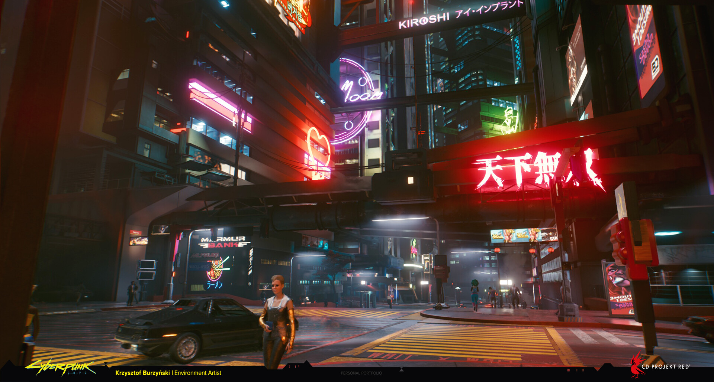
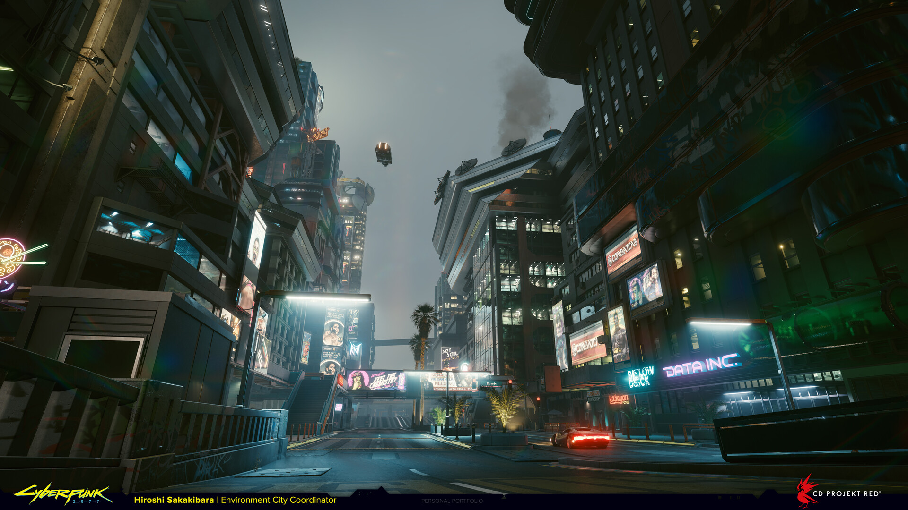
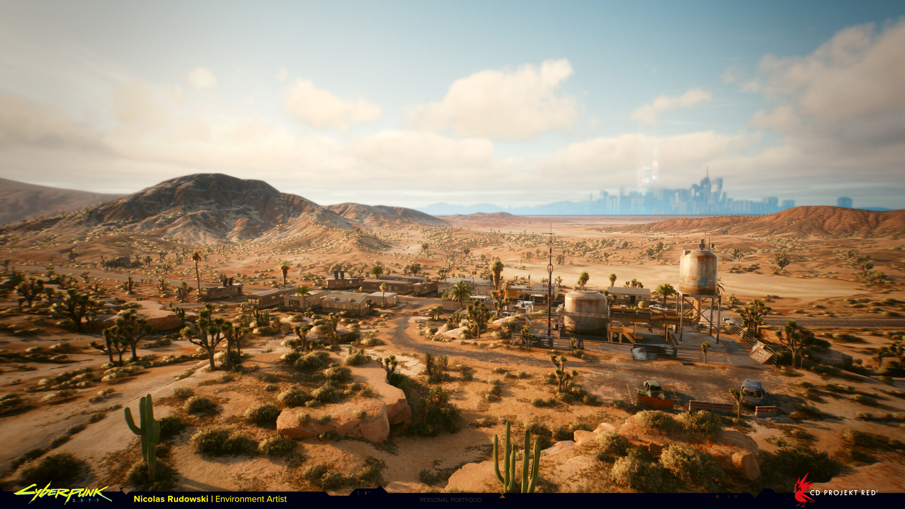
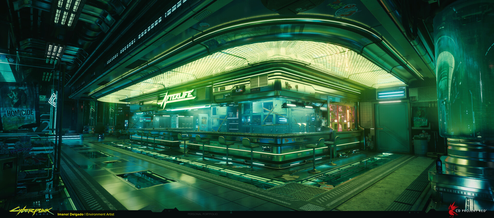

Puntos Emblemáticos
Night City es una megalópolis viva, brutal y en constante cambio, donde cada distrito cuenta una historia de ambición y decadencia. Desde los rascacielos blindados de los megacorporativos hasta las cloacas donde operan los netrunners, recorrer estos puntos clave es adentrarse en las entrañas de la bestia. Prepará tu equipo, vigilá tus espaldas y recordá que en este lugar nadie sobrevive por accidente: estos son los enclaves más peligrosos, codiciados y legendarios de la ciudad.
Corpo Plaza
El corazón financiero de la ciudad, ubicado en el centro de City Center. Es un escaparate de riqueza obscena y poder corporativo implacable, dominado por las imponentes torres de Arasaka y rodeado por un gigantesco holograma circular flotante. Acá las leyes no aplican para los directivos y un solo paso en falso puede costarte la vida o convertirte en un peón de los altos ejecutivos.

Japantown
Ubicado en el distrito de Westbrook, es el núcleo indiscutido del ocio nocturno y el vicio en Night City. Sus calles laberínticas brillan bajo una lluvia eterna de neones rosados y cian, flanqueadas por hoteles de lujo, burdeles tecnológicos y cerezos artificiales holográficos. Controlado de cerca por la banda de los Tyger Claws, es un sector tan hermoso visualmente como letal si te metés en el callejón equivocado.

Watson (Kabuki y Little China)
Antiguo centro industrial y turístico que cayó en desgracia tras la crisis, convirtiéndose en un laberinto densamente poblado de inmigrantes, mercados negros de ciberware, callejones sucios y clínicas clandestinas de ripperdocs. Es la zona cero de la actividad de los Edgerunners recién iniciados y el hogar de operaciones de bandas inestables como Maelstrom.

The Badlands (Los Baldíos)
La vasta, árida y desolada extensión desértica que rodea los límites amurallados de Night City. Contaminados por vertidos tóxicos corporativos y tormentas de polvo implacables, los Badlands son el hogar de los clanes nómadas (como los Aldecaldos) que contrabandean mercancía ilegal hacia la ciudad, además de ser el refugio de chatarreros y exiliados.

The Afterlife
Escondido en las entrañas de un antiguo refugio antiaéreo en el distrito de Watson, este mítico bar de mercenarios es la catedral de los Edgerunners. Dirigido por la legendaria fixer Rogue, las reglas son estrictas: cero violencia dentro del local. Es el único lugar de la megalópolis donde los contratos más sucios se hacen realidad, y donde las leyendas caídas logran la inmortalidad al bautizar los tragos más fuertes de la barra con sus nombres.
